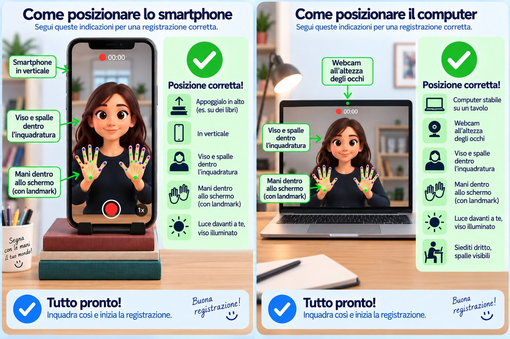

—
0 / 10
lontanovicino
Avvio…
Un computer sta imparando la LIS.
Con i tuoi segni lo aiuti a riconoscere tante persone, non una sola.
Puoi fermarti quando vuoi.
Solo lettere e numeri. Senza spazi.
Se qualcosa non va, la pagina te lo dice.

Tocca o clicca l'immagine per ingrandirla.